Every camera makes the same basic trade: how close you stand versus how much you zoom. Standing close to a subject with a wide lens versus standing far with a zoomed-in lens changes the field of view. The background, and specific features of the subject, stretch to different degrees! For this project, we did three experiments to show and explore this effect.
1. Selfie: The Wrong Way vs. The Right Way
A close-up selfie stretches out my nose and shrinks my ears. Stepping back and zooming in to match the framing keeps that same nose-to-ear distance roughly constant compared to distance from the camera, so this "stretching" effect disappears.
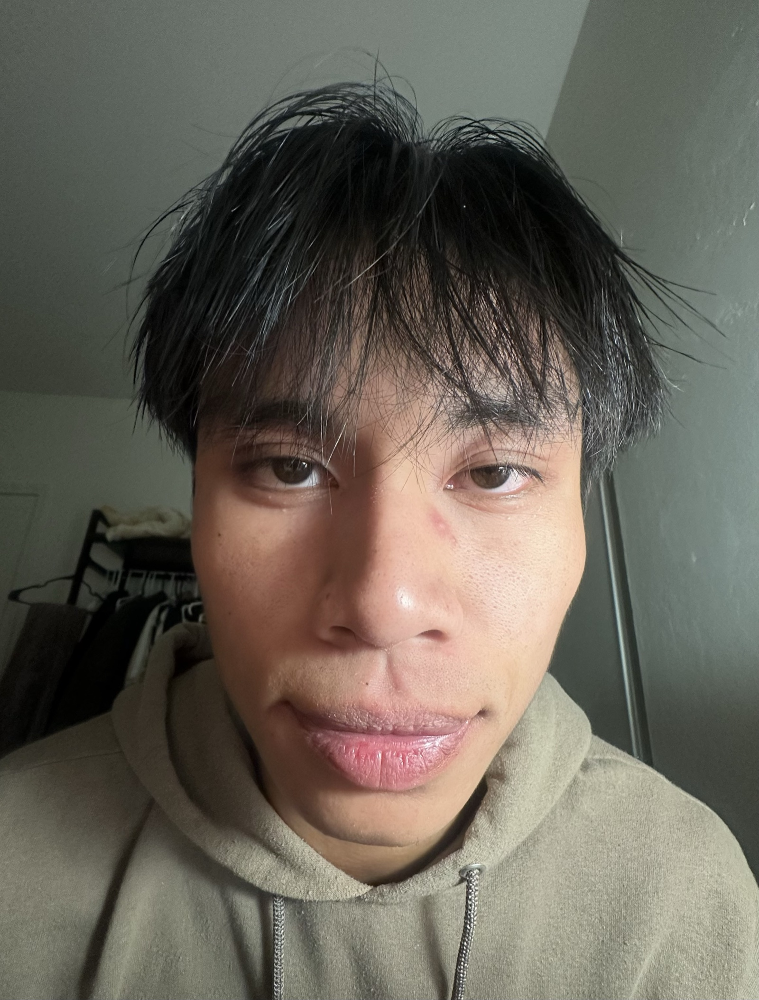
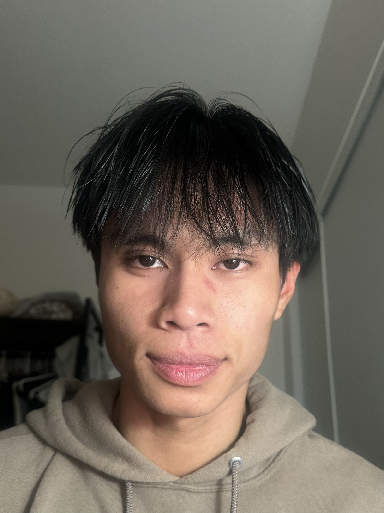
2. Architectural Perspective Compression
I tried the same idea on this curved atrium ledge at The Gateway. From afar and zoomed, (longer lens) the railings and ceiling arcs stack up and look almost flat. From close to the railing, and zooming out (wider lens) the near edge of the railing is way closer to the camera than the far edge, so the curve stretches out.
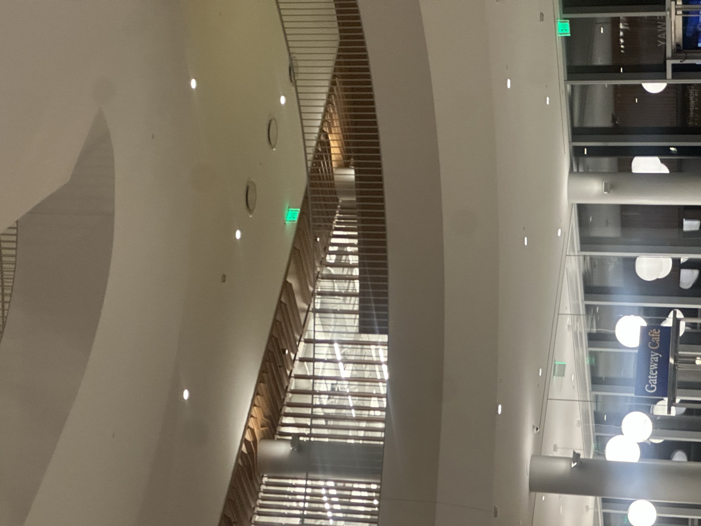
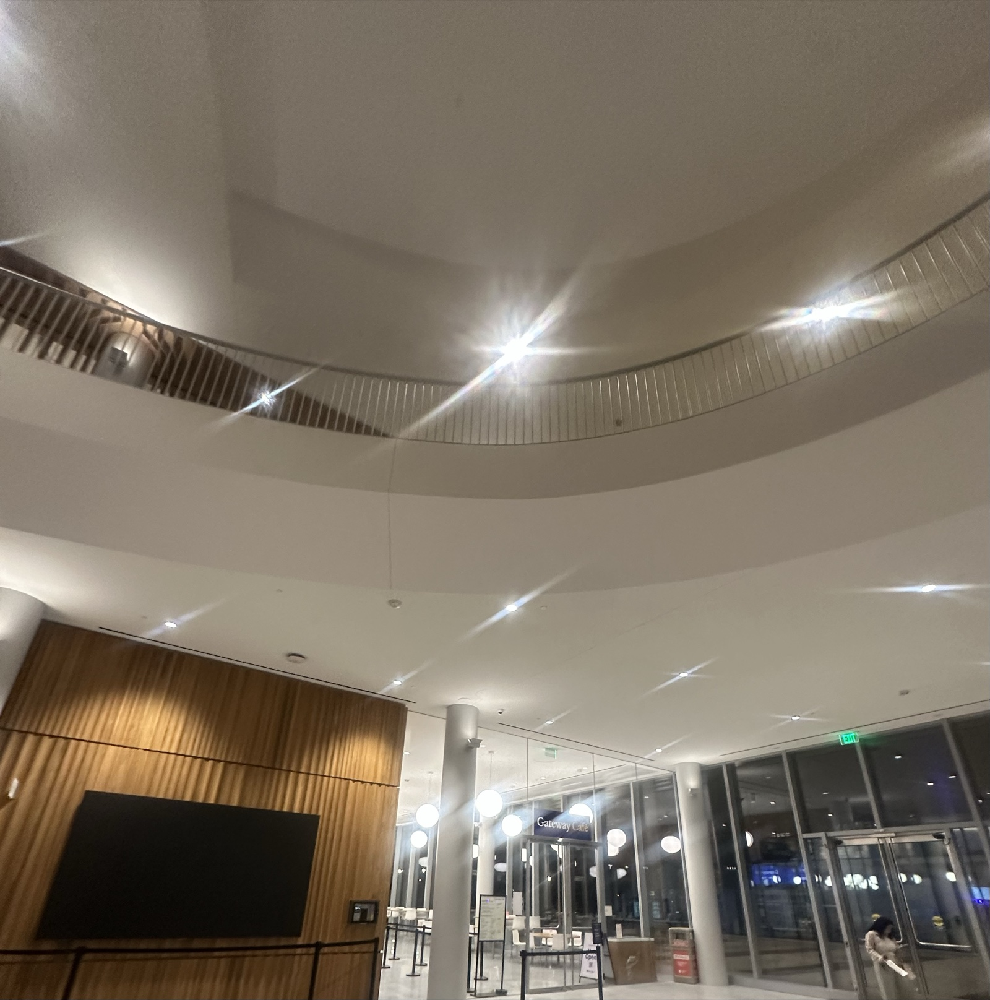
3. The Dolly Zoom
For the dolly zoom I had my girlfied hold up a Stitch plush in my room, with a lamp and mirror in the background. I walked the camera backward while zooming in across 7 photos, and the width of the background changes as a result! The room behind him keeps compressing and creeping closer.
Individual stills
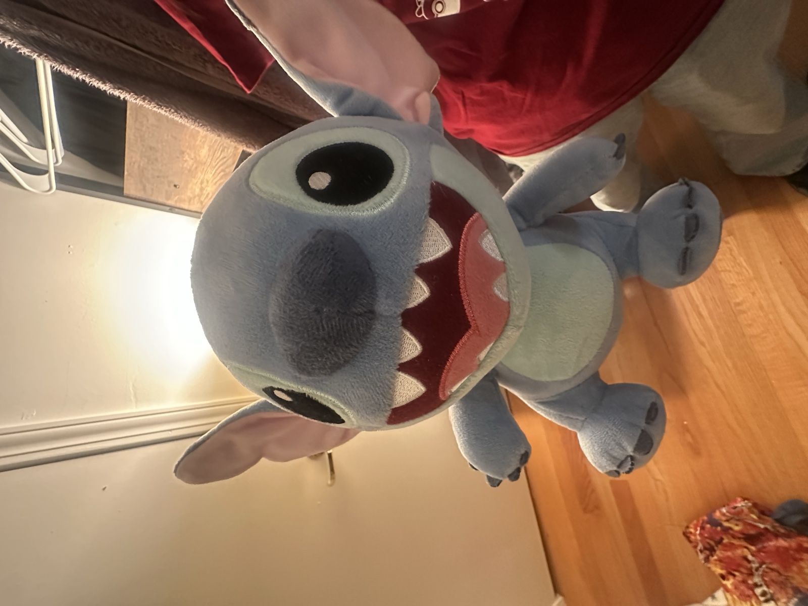
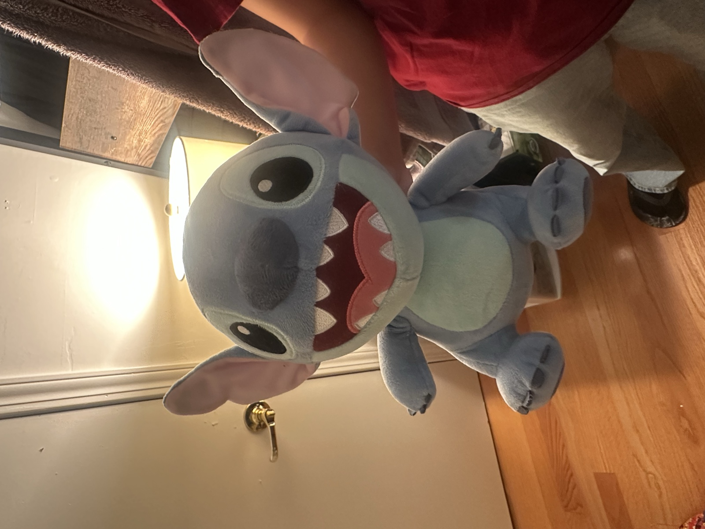
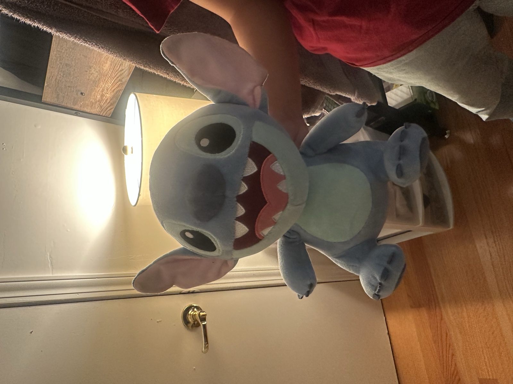
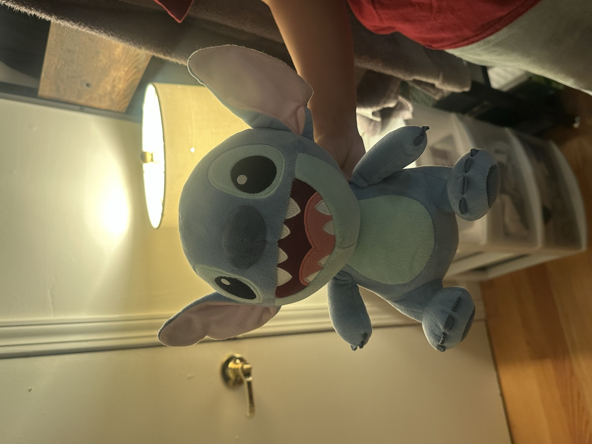
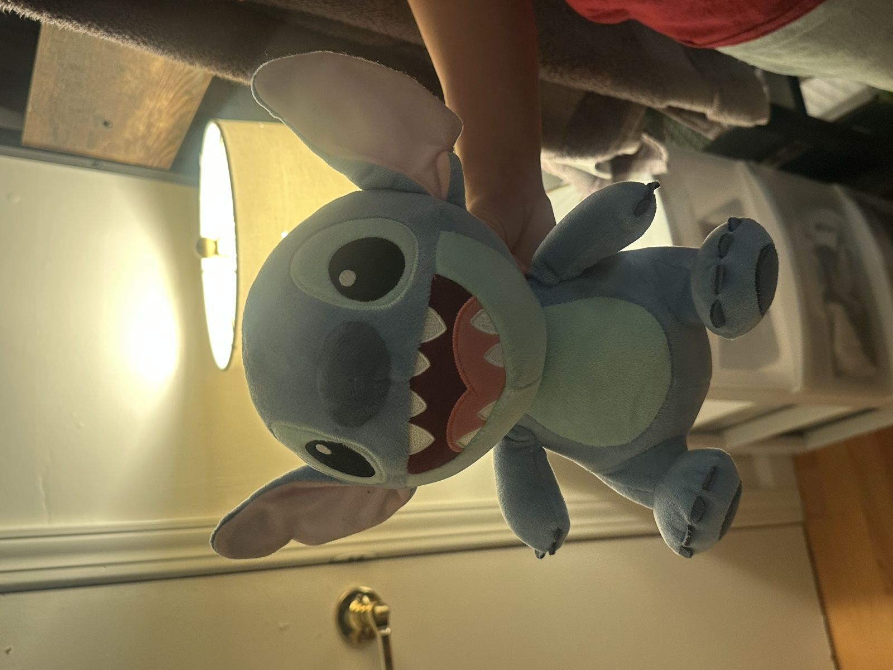
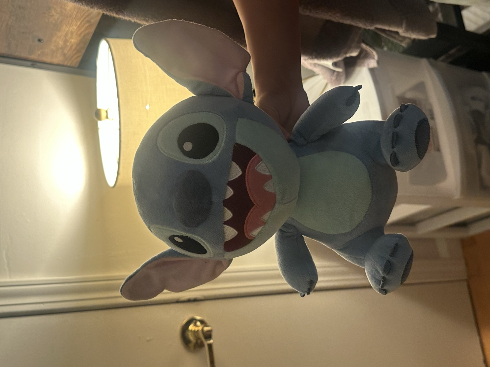
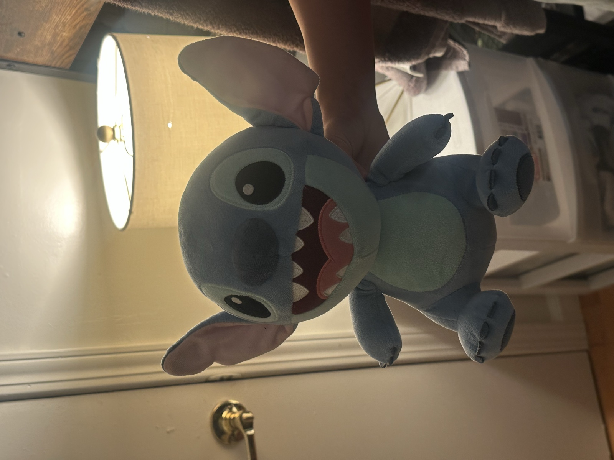